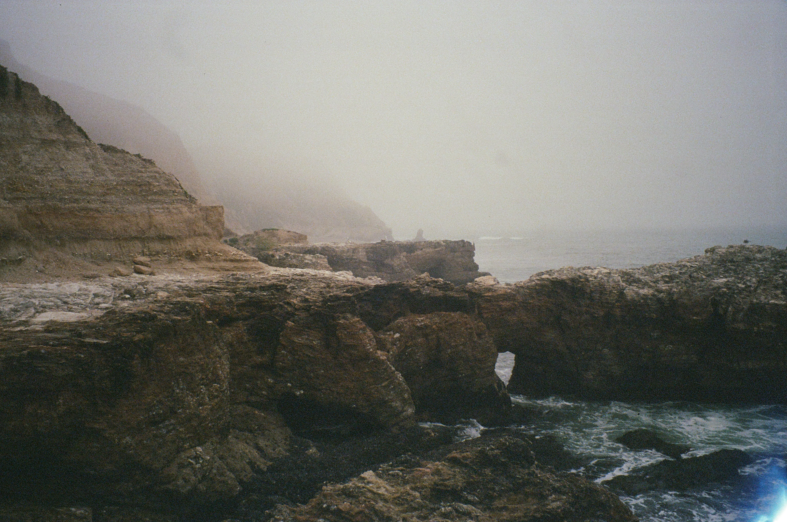
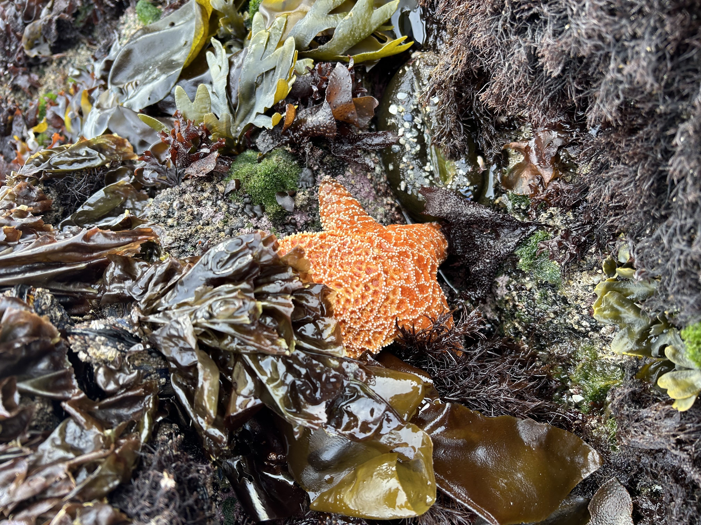
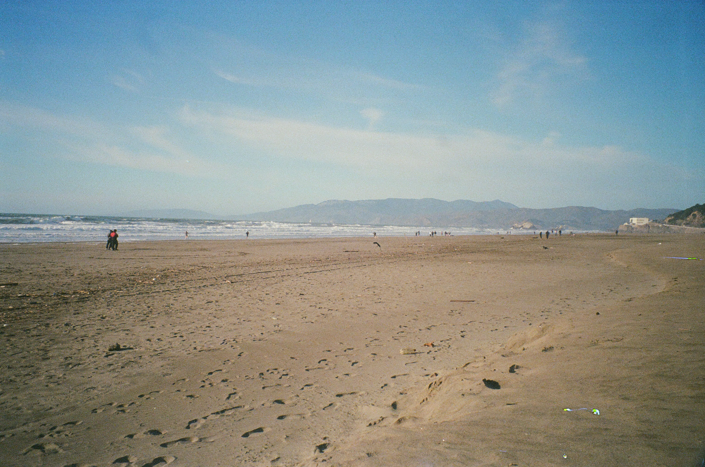

Ecological networks are useful tools for representing various interactions between species within a community. The network structure is made of nodes (i.e. species) and edges (i.e. intercations) and can be paired with dynamical equations that describe how species abundances change over time. While there are many types of ecological networks (e.g. mutalisims, mutliplex networks), I primarily study food web models that describe all consumer-resource interactions within a community.


My research focuses on empirical food web models of rocky intertidal species. These ecosystems, particularly those located in eastern boundary upwelling zones, are highly productive and nutrient rich. These allometrically parameterized models, comprising of several species including mussels snails, and limpets, describe how biomass changes over time. I primarily study the Chilean intertidal food web but hope to compare my work with other intertidal systems in the California, South Africa, and Portugal upwelling regions.
It is critical that we understand how climate change is alters the dynamics of complex communities. Using the dynamical food-web framework, I seek to understand the effects of warming and environmental variability in intertidal ecosystems. I use thermal peroformance curves to simulate the effect that temperature has on species' growth and consumption needs in order to predict the effect of climate change on communities.
